This page will contain my work on the various assignments I did for STA355 during the Winter 2018 semester.
#Assignment 1
\[ F^{-1} (\tau) = \lambda^{-1}\log(1-\tau) \]
Recall the CDF of the exponential distribution: \[ F(x) = 1 - e^{-\lambda x} \] And find the inverse for some fixed x. \[ F^{-1}(x) = -\frac{1}{\lambda} \log(1-x) \] As such for some constant quantile we have: \[ F^{-1}(\tau) = -\frac{1}{\lambda} \log(1-\tau) \]
qq.expo <- function(x,plot=T, tle) {
x <- sort(x) # sorts the data from smallest to largest
n <- length(x) # length of x
tau <- (c(1:n)-3/8)/(n+1/4)
if (plot) {
plot(-log(1-tau),x,xlab="Standard exponential quantiles",
ylab="Ordered data", main = tle)
abline(a=0,b=mean(abs(x)))
# draws a line with slope equal to
# the sample mean and intercept 0
}
else {
r <- list(x=x,quantiles=-log(1-tau))
r
}
}
num.runs <- c(100,1000,10000)
par(mfrow=c(2,3))
for (i in num.runs) {
# get random samples
set.seed(123)
exp.sample <- rgamma(i, shape = 1)
set.seed(123)
gamma.sample <- rgamma(i, shape = 5)
set.seed(123)
wei.sample <- rweibull(i, shape = 3)
set.seed(123)
norm.sample <- rnorm(i, mean = 0, sd = 1)
# compare the QQ-Plots - order of graphs correlates to the order the code is displayed in
qq.expo(exp.sample, tle = "Exponential vs Exponential")
qq.expo(gamma.sample, tle = "Exponential vs Gamma")
qq.expo(wei.sample, tle = "Exponential vs Weibull")
qq.expo(norm.sample, tle = "Exponential vs Standard Normal")
}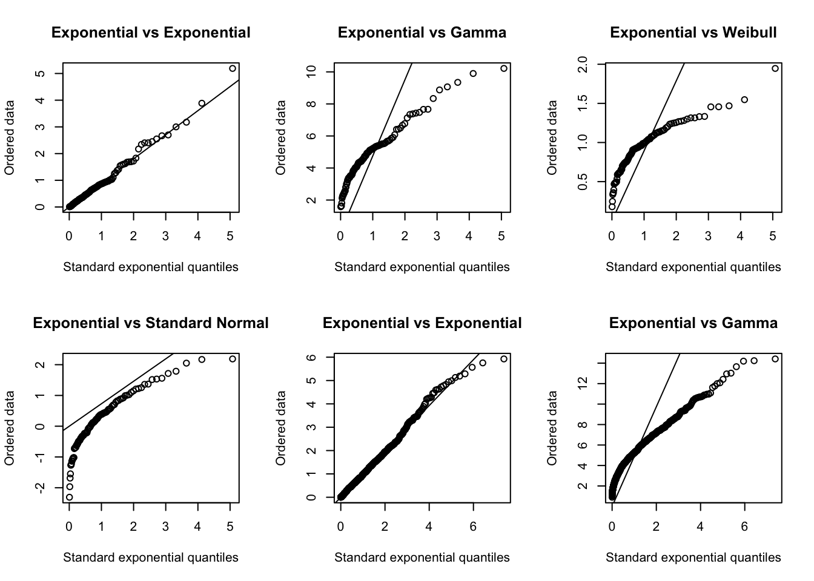
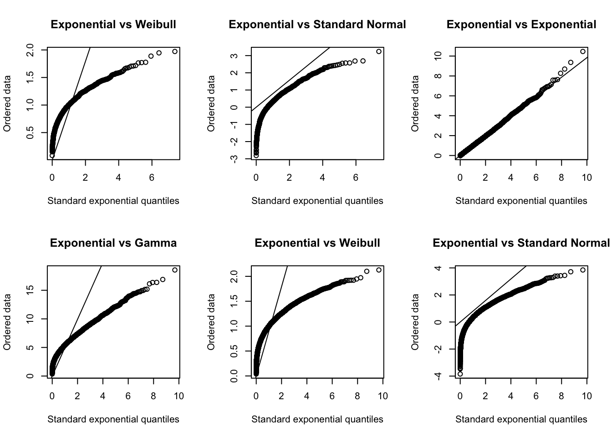
Based on these graphs we can see that only an exponential distribution will fit along the line defined by the function. The other distrubtions show significant divergence from it, especially the normal distribution which has values that are negatives as well (domain of exponential distribution is positive values only). Another thing to note is that as the sample size increases the divergence/alignment is more clear. In the case of the exponential distribution, the graph with a sample size of 10000 has the smallest amounts of deviation from the line, even at the higher qunatiles it has a tigher aligment.
aircon <- scan("Datasets/STA355/aircon.txt", sep = " ")
qq.expo(x = aircon, tle = "Exponential Model for Air Conditioning Data")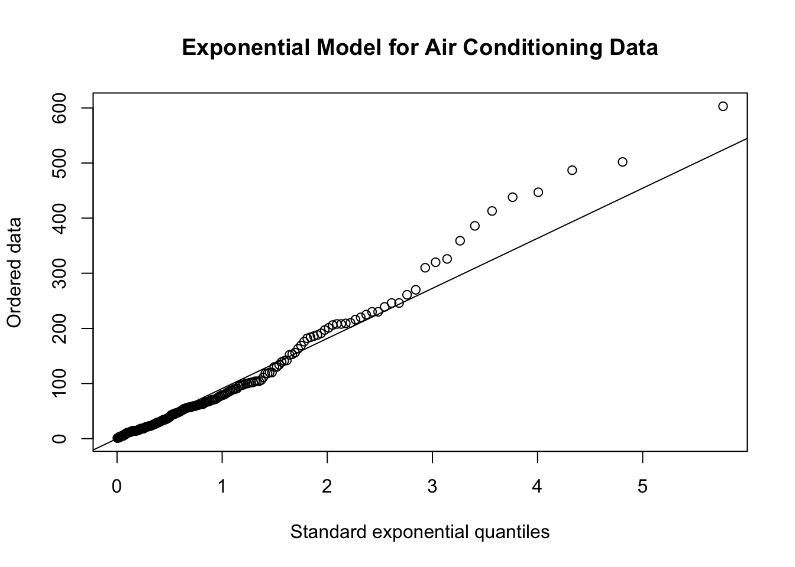
The exponential model for this data is a reasonable assumption based on the QQ plot generated. For the lower quantiles, we have a very close fit to the line which is expected since its a right skewed distribution so majority of the points would be closer to zero. We see some deviation but since the points lie above the line it indicates a lighter tail in our data (i.e. tapers towards zero faster) which supports the right skewed appearance of the distribution.
: \[ F^{-1} (\tau) = \sigma (-\log(1-\tau))^\frac{1}{\alpha} \]
Following the same steps as Question 1, the proof is trivial.
By lecture note 5, slide 5:
\[ Var(X_{(k)}) = \frac{\tau (1-\tau)}{n f^2( \sigma\left[-log(1-\tau)\right]^\frac{1}{\alpha})} \] Where f is the Weibull function. After some cancellation we get the function:
\[ Var(X_{(k)}) = \frac{\tau \sigma^2}{n \alpha^2(1-\tau) \left[ \log(1-\tau)\right]^{2(1-\frac{1}{\alpha})}} \]
From lecture note 6 slide 6, we know that the exponential distribution is parameterized by: \[ \lambda = f(F^{-1}(\tau)) \] And furthermore, we can leverage part A of this question to find the desired rate parameter. As such we plug in part A into the Weibull distribution: \[F^{-1}(\tau) = \sigma (-\log(1-\tau))^\frac{1}{\alpha} \longrightarrow f(x; \alpha, \sigma)\] \[ \Rightarrow f(F^{-1}(\tau)) = \left( \frac{\alpha}{\sigma} \right) \left( \frac{\sigma (-\log (1 - \tau))^\frac{1}{\alpha}}{\sigma} \right)^{\alpha - 1} exp\left[ - \left( \frac{\sigma (-\log (1 - \tau))^\frac{1}{\alpha}}{\sigma} \right)^\alpha \right] \]
and after some cancellation we get: \[ \Rightarrow \lambda = \frac{\alpha (1-\tau)}{\sigma} \left[ \log(1-\tau) \right] ^{1 - \frac{1}{\alpha}}\]
large_alphas <- c(1:10)
small_alphas <- c(1:10)/10
tau_values <- c(0:99)/100
par(mfrow=c(2,5))
for (alpha in large_alphas) {
means <- (alpha*(1-tau_values)*(-log(1-tau_values))^(1-1/alpha))
plot(means, main = paste("alpha = ", as.character(alpha)))
}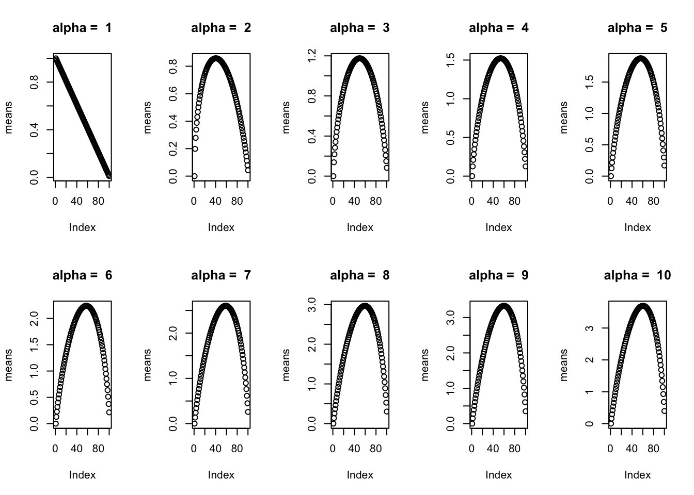
for (alpha in small_alphas) {
means <- (alpha*(1-tau_values)*(-log(1-tau_values))^(1-1/alpha))
plot(means, main = paste("alpha = ", as.character(alpha)))
}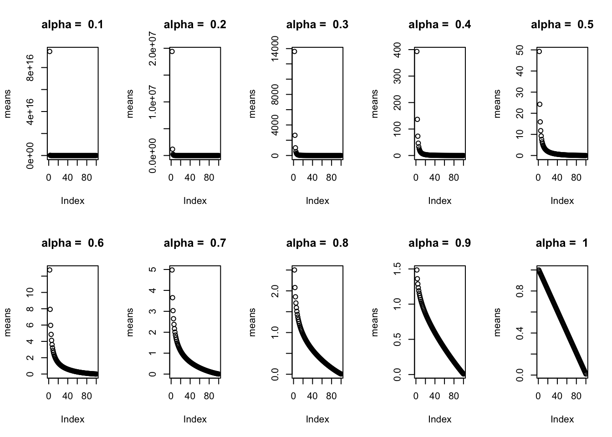
We notice that the graphs of the means exhibit one of 2 behaviours depending on the value of alpha. For alpha = 1 we get a constant slope on the means. For alpha < 1, we can see that the means exhibit an exponentially decreasing trend. While for alpha > 1, a unimodal distribution with a around the 50th quantile that shifts towards the right as alpha increases. The reason that this is important is that this distribution can be used to model real life events. It acts similarly to the hazard function where, based on the shape of the graph, we can tell if a the event is more likely to occur closer to time 0 or further in time (ex. time of death, time until failure of a lightbulb). It references the “better new than old” vs. “better old than new” principle discused in class.
#Assignment 2
dataset <- as.data.frame(scan("Datasets/STA355/geyser.txt", sep = " "))
colnames(dataset) <- c("time")
dataset <- dataset[!is.na(dataset)]
dataset <- as.data.frame(dataset)
norm.dataset <- as.data.frame(rnorm(length(dataset)))
norm.dataset %>% ggplot(aes(sample = dataset$dataset)) + geom_abline(slope = 1, intercept = 0) + stat_qq()
ggplot(data = dataset, aes(x = dataset, ..density..)) + geom_histogram(binwidth = 0.1) + theme_minimal() + geom_density(bw = 0.05, colour = "red", adjust = 5)To check for the normality of the data we use the QQ plot as developped in class. Evidently, it does not fall along the y=x line so the data is not normal. When we plot a historgram and overlay the denisty function we see it resembles a bimodal distribution.
dataset <- scan("Datasets/STA355/geyser.txt", sep = " ")
dataset <- dataset[!is.na(dataset)]
plot(density(dataset))
rug(dataset)
lines(density(dataset, bw = "nrd"), col = "red")
lines(density(dataset, bw = "ucv"), col = "blue")
lines(density(dataset, bw = "bcv"), col = "green")
lines(density(dataset, bw = "SJ-ste"), col = "purple")
lines(density(dataset, bw = "SJ-dpi"), col = "yellow")
legend(55, 0.035,
legend = c("nrd0", "nrd", "ucv", "bcv", "SJ-ste", "SJ-dpi"),
col = 1:6, lty = 1)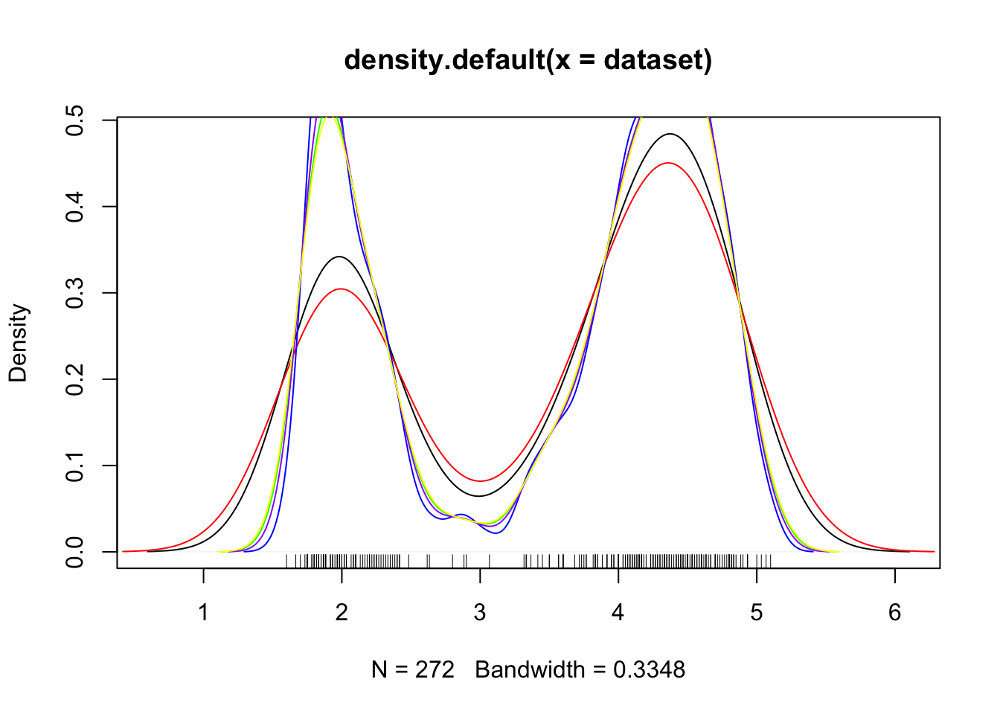
bandwidths <- seq(5, 1000, 100)/500
for (i in bandwidths) {
plot(density(dataset), main = paste("Density of Old Faithful Dataset w/ bandwidth ", as.character(i)))
rug(dataset)
lines(density(dataset, bw = i), col = "red")
}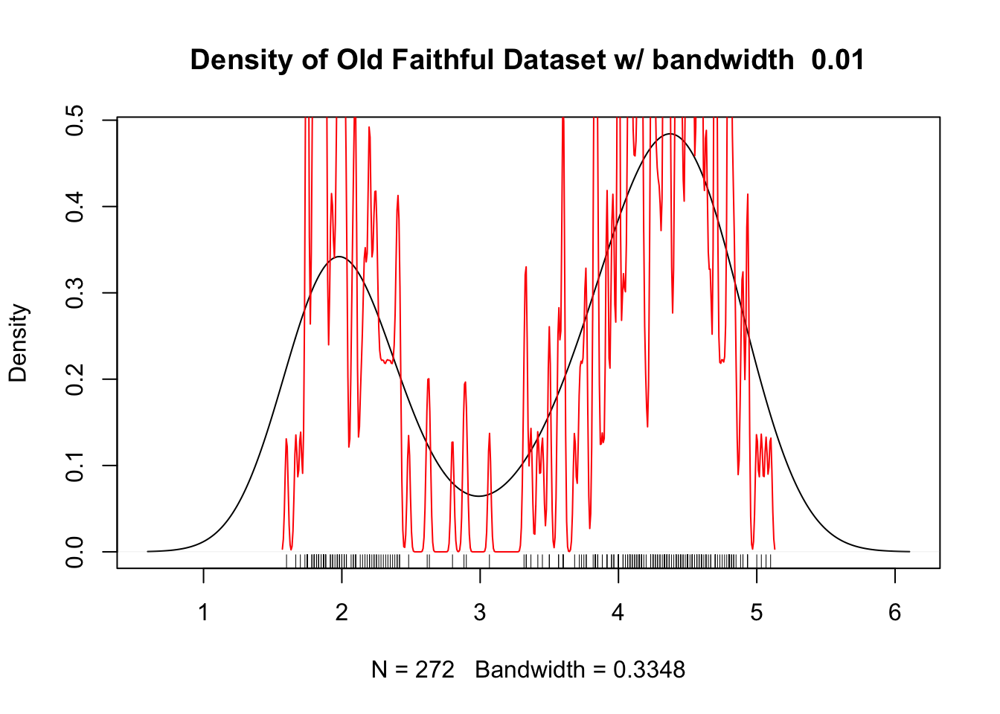
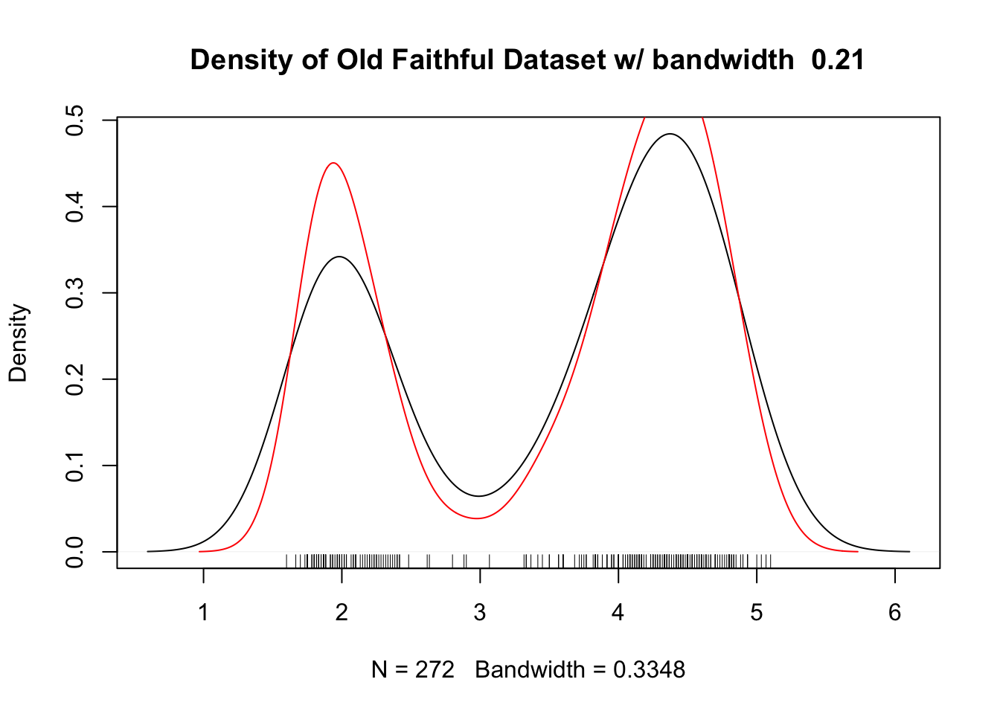
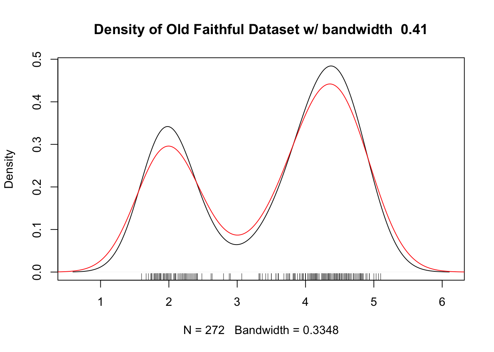
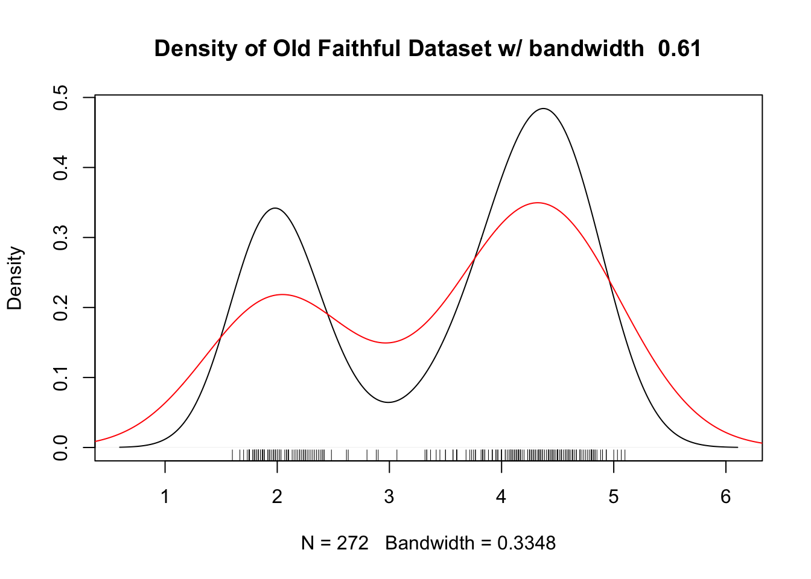
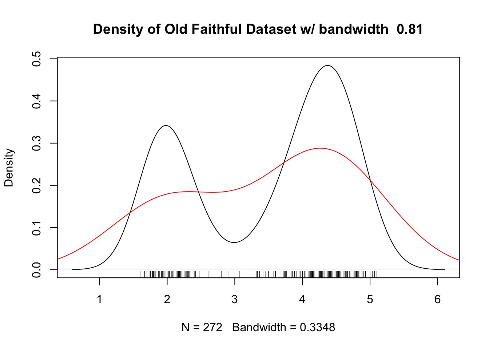
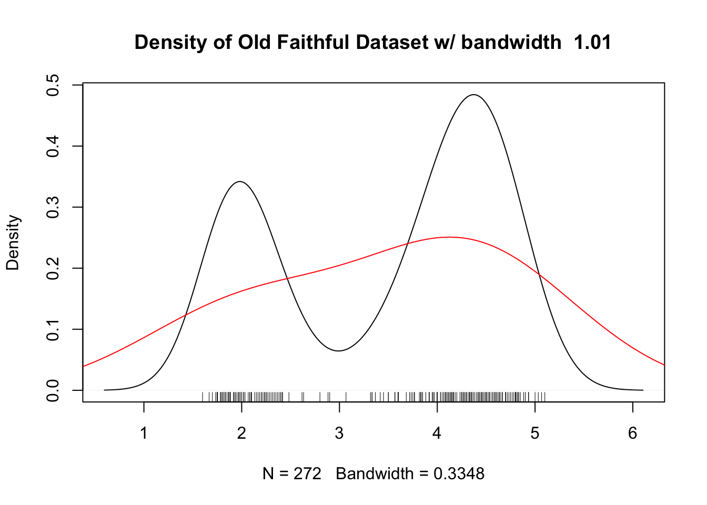
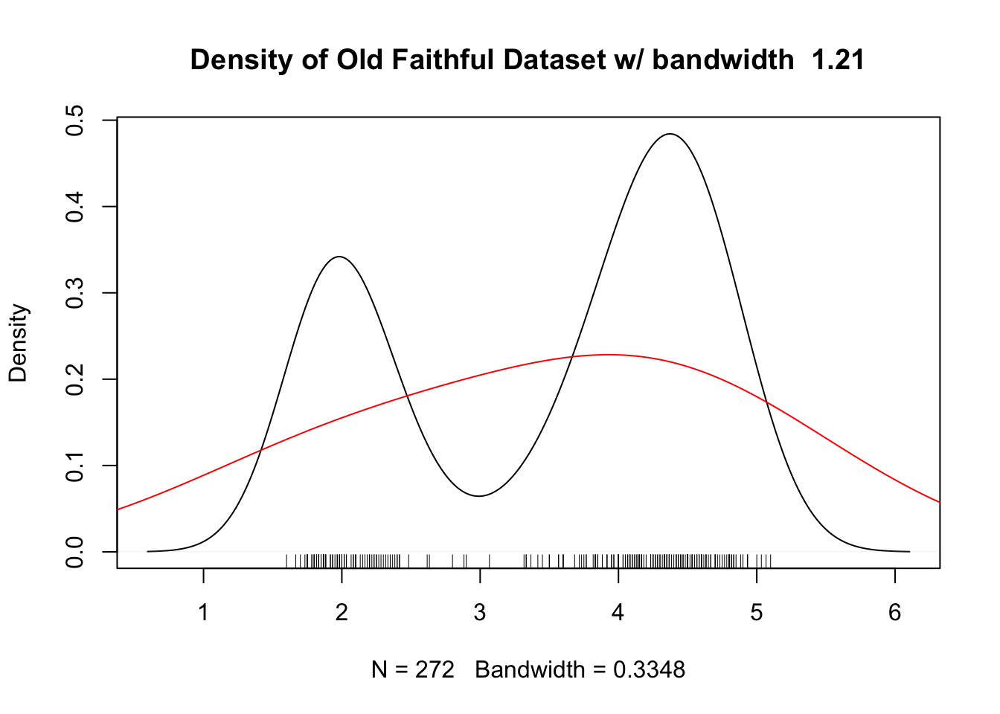
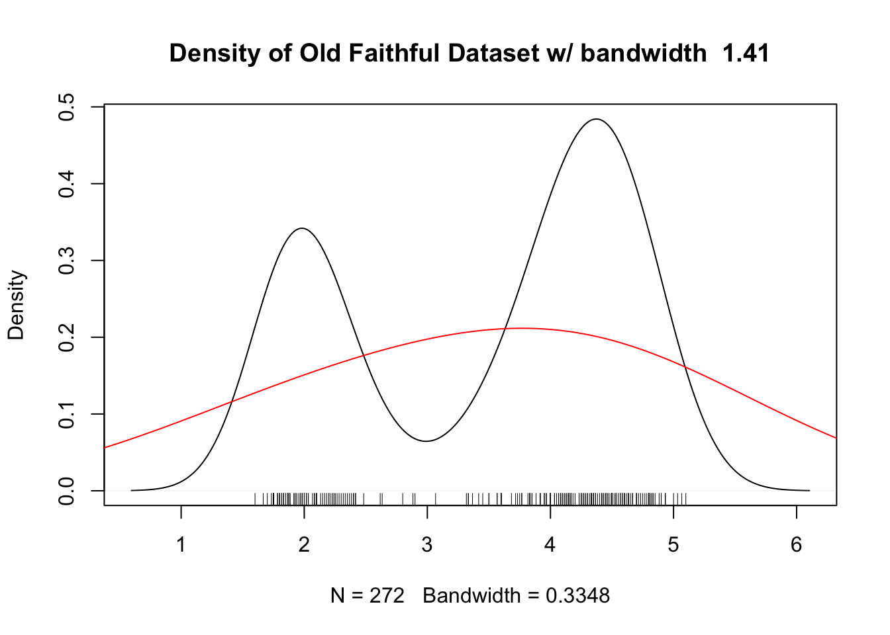
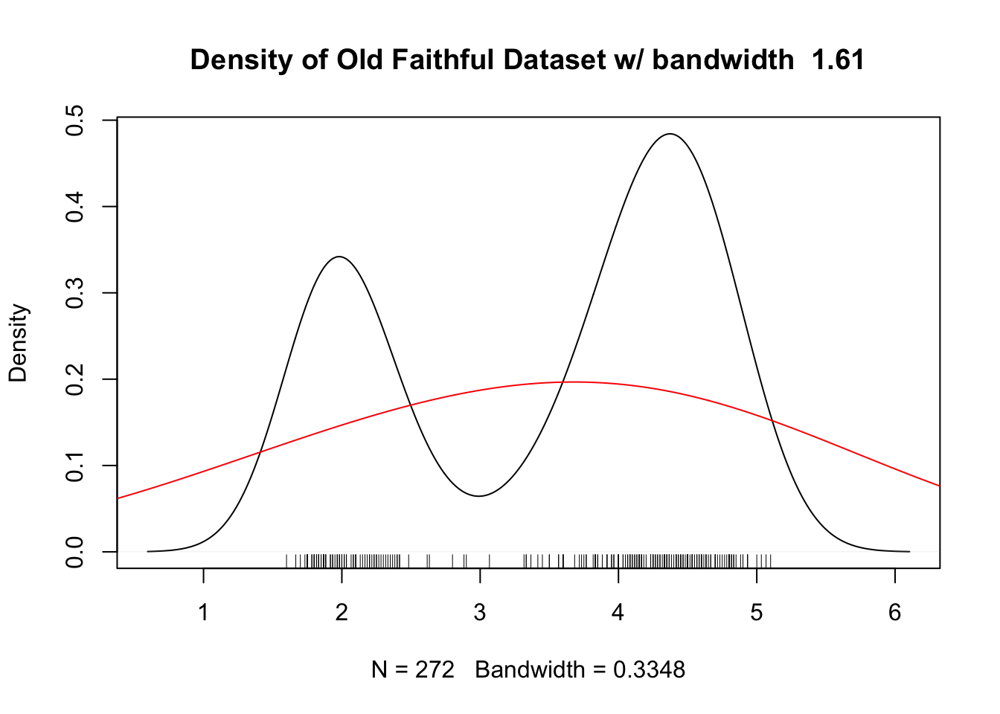
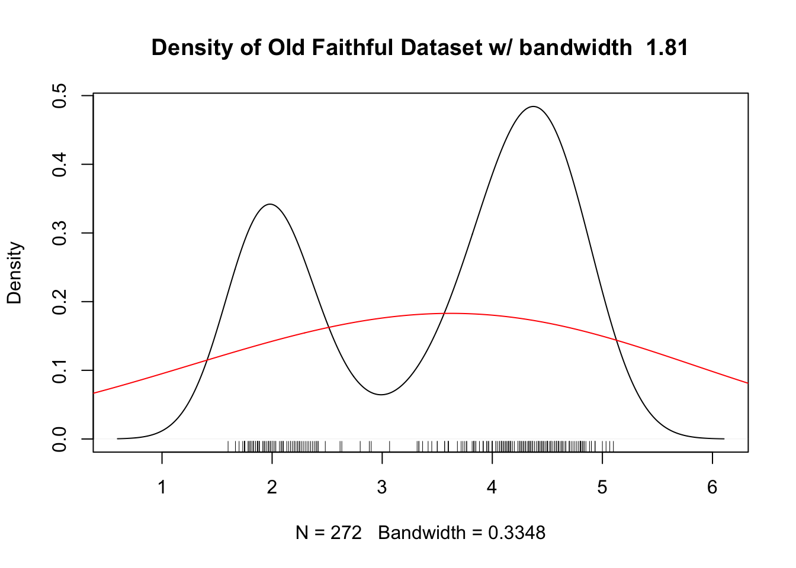
As we increase the bandwidth we get smoother and flater estimates of the density. This is because each individual data point doesn’t impact the kernel density estimator as much. One thing to note, is that as the bandidth keeps increasing we begin to loose features in the data structure such as the bimodal nature of it.
We now assume that data comes from a mixture of Gaussians and as such we need to estimate 5 parameters. Beginning with the means of the two distributions, they will always correspond to the peaks of the distribution.
dd <- density(dataset, bw = 0.51) # bw param estimated from part B
head(dd$x)## [1] 0.07000000 0.08283757 0.09567515 0.10851272 0.12135029 0.13418787head(dd$y)## [1] 0.0004474705 0.0004883705 0.0005313360 0.0005779777 0.0006290318 0.0006824900mu1 <- dd$x[which.max(dd$y)]
paste("The first mean is ", round(mu1,4))## [1] "The first mean is 4.3449"dd.restrict <- density(dataset[dataset < 3], bw = 0.51)
mu2 <- dd.restrict$x[which.max(dd.restrict$y)]
paste("The second mean is ", round(mu2,4))## [1] "The second mean is 2.0068"To find the weighting parameter we use the means to back it out with a weighted average. \[ \mu_{data} = \theta \mu_1 + (1-\theta)\mu_2 \Rightarrow \theta = \frac{\mu_{data} - \mu_2}{\mu_1 - \mu_2} = \frac{3.35-2.01}{4.34-2.01} = 0.575 \]
To estimate the variance of each normal we take a naive approach which is to split the data at the trough. Once we do this we calculate the sample variance and let that be our variance parameter.
### find the x value between the 2 peaks
d <- as.data.frame(cbind(dd$x, dd$y))
colnames(d) <- c("x", "y")
d %>% filter(dd$x > mu2 & dd$x < mu1) %>% arrange(y)## x y
## 1 2.996967 0.1195803
## 2 3.009804 0.1195838
## 3 2.984129 0.1196405
## 4 3.022642 0.1197122
## 5 2.971292 0.1198493
## 6 3.035479 0.1199495
## 7 2.958454 0.1201401
## 8 3.048317 0.1202511
## 9 2.945616 0.1205150
## 10 3.061155 0.1207202
## 11 2.932779 0.1210329
## 12 3.073992 0.1212569
## 13 2.919941 0.1216122
## 14 3.086830 0.1218966
## 15 2.907104 0.1223126
## 16 3.099667 0.1226683
## 17 2.894266 0.1231124
## 18 3.112505 0.1235043
## 19 2.881429 0.1239721
## 20 3.125342 0.1244841
## 21 2.868591 0.1249858
## 22 3.138180 0.1255533
## 23 2.855753 0.1260573
## 24 3.151018 0.1267018
## 25 2.842916 0.1272219
## 26 3.163855 0.1280022
## 27 2.830078 0.1284980
## 28 3.176693 0.1293654
## 29 2.817241 0.1298287
## 30 3.189530 0.1308467
## 31 2.804403 0.1312812
## 32 3.202368 0.1324366
## 33 2.791566 0.1328041
## 34 3.215205 0.1340881
## 35 2.778728 0.1343926
## 36 3.228043 0.1358939
## 37 2.765890 0.1360977
## 38 3.240881 0.1377662
## 39 2.753053 0.1378503
## 40 2.740215 0.1396926
## 41 3.253718 0.1397302
## 42 2.727378 0.1416112
## 43 3.266556 0.1418181
## 44 2.714540 0.1435738
## 45 3.279393 0.1439641
## 46 2.701703 0.1456425
## 47 3.292231 0.1462350
## 48 2.688865 0.1477527
## 49 3.305068 0.1485881
## 50 2.676027 0.1499231
## 51 3.317906 0.1510070
## 52 2.663190 0.1521669
## 53 3.330744 0.1535602
## 54 2.650352 0.1544445
## 55 3.343581 0.1561665
## 56 2.637515 0.1567928
## 57 3.356419 0.1588690
## 58 2.624677 0.1591821
## 59 2.611840 0.1616059
## 60 3.369256 0.1616644
## 61 2.599002 0.1640903
## 62 3.382094 0.1645104
## 63 2.586164 0.1665966
## 64 3.394932 0.1674777
## 65 2.573327 0.1691422
## 66 3.407769 0.1705003
## 67 2.560489 0.1717185
## 68 3.420607 0.1735920
## 69 2.547652 0.1743115
## 70 3.433444 0.1767816
## 71 2.534814 0.1769376
## 72 2.521977 0.1795739
## 73 3.446282 0.1800149
## 74 2.509139 0.1822239
## 75 3.459119 0.1833385
## 76 2.496301 0.1848843
## 77 3.471957 0.1867238
## 78 2.483464 0.1875473
## 79 3.484795 0.1901539
## 80 2.470626 0.1902114
## 81 2.457789 0.1928697
## 82 3.497632 0.1936798
## 83 2.444951 0.1955236
## 84 3.510470 0.1972413
## 85 2.432114 0.1981567
## 86 2.419276 0.2007778
## 87 3.523307 0.2008646
## 88 2.406438 0.2033760
## 89 3.536145 0.2045493
## 90 2.393601 0.2059423
## 91 3.548982 0.2082657
## 92 2.380763 0.2084904
## 93 2.367926 0.2109858
## 94 3.561820 0.2120534
## 95 2.355088 0.2134496
## 96 3.574658 0.2158742
## 97 2.342250 0.2158760
## 98 2.329413 0.2182351
## 99 3.587495 0.2197325
## 100 2.316575 0.2205614
## 101 2.303738 0.2228154
## 102 3.600333 0.2236438
## 103 2.290900 0.2250085
## 104 2.278063 0.2271595
## 105 3.613170 0.2275768
## 106 2.265225 0.2292004
## 107 2.252387 0.2311946
## 108 3.626008 0.2315517
## 109 2.239550 0.2331079
## 110 2.226712 0.2349240
## 111 3.638845 0.2355540
## 112 2.213875 0.2366885
## 113 2.201037 0.2383244
## 114 3.651683 0.2395744
## 115 2.188200 0.2398870
## 116 2.175362 0.2413706
## 117 2.162524 0.2427163
## 118 3.664521 0.2436306
## 119 2.149687 0.2439994
## 120 2.136849 0.2451543
## 121 2.124012 0.2462014
## 122 2.111174 0.2471812
## 123 3.677358 0.2476973
## 124 2.098337 0.2479809
## 125 2.085499 0.2487100
## 126 2.072661 0.2493220
## 127 2.059824 0.2497905
## 128 2.046986 0.2501862
## 129 2.034149 0.2504120
## 130 2.021311 0.2505376
## 131 2.008474 0.2505656
## 132 3.690196 0.2517814
## 133 3.703033 0.2558788
## 134 3.715871 0.2599818
## 135 3.728708 0.2640921
## 136 3.741546 0.2682017
## 137 3.754384 0.2723103
## 138 3.767221 0.2764089
## 139 3.780059 0.2805004
## 140 3.792896 0.2845756
## 141 3.805734 0.2886304
## 142 3.818571 0.2926731
## 143 3.831409 0.2966733
## 144 3.844247 0.3006530
## 145 3.857084 0.3045999
## 146 3.869922 0.3084981
## 147 3.882759 0.3123706
## 148 3.895597 0.3161790
## 149 3.908434 0.3199433
## 150 3.921272 0.3236665
## 151 3.934110 0.3273038
## 152 3.946947 0.3309020
## 153 3.959785 0.3344230
## 154 3.972622 0.3378678
## 155 3.985460 0.3412681
## 156 3.998297 0.3445452
## 157 4.011135 0.3477663
## 158 4.023973 0.3509062
## 159 4.036810 0.3539305
## 160 4.049648 0.3568975
## 161 4.062485 0.3597337
## 162 4.075323 0.3624799
## 163 4.088160 0.3651501
## 164 4.100998 0.3676593
## 165 4.113836 0.3700998
## 166 4.126673 0.3724117
## 167 4.139511 0.3745939
## 168 4.152348 0.3767033
## 169 4.165186 0.3786244
## 170 4.178023 0.3804560
## 171 4.190861 0.3821707
## 172 4.203699 0.3837126
## 173 4.216536 0.3851728
## 174 4.229374 0.3864554
## 175 4.242211 0.3876106
## 176 4.255049 0.3886687
## 177 4.267886 0.3895101
## 178 4.280724 0.3902634
## 179 4.293562 0.3908588
## 180 4.306399 0.3912881
## 181 4.319237 0.3916276
## 182 4.332074 0.3917465# split point is 2.997
dist1 <- d %>% filter(x < 2.997)
dist2 <- d %>% filter(x >2.997)
var(dist1)## x y
## x 0.72334911 0.058442564
## y 0.05844256 0.008001645var(dist2)## x y
## x 1.10379750 -0.09141644
## y -0.09141644 0.01898155# dist1 -> 0.7233
# dist2 -> 1.1038The estimated parameters: \[ \theta = 0.5751 \quad \mu_1 = 4.3449 \quad \mu_2 = 2.0068 \quad \sigma_1^2 = 0.1038 \quad \sigma_1^2 = 1.1038\]
\[ \frac{d}{dx} \left(t - \frac{1}{\mu (F)} \int_0^x F^{-1}(s)fs \right) =1 - \frac{1}{\mu (F)} F^{-1} (x)\] \[ \Rightarrow 0 =1 - \frac{1}{\mu (F)} F^{-1} (x) \Rightarrow \boxed{ \mu (F) = F^{-1} (x)} \]
\[ \mathcal{P}(F) = t - \frac{1}{\mu} \int_0^x F^{-1}(s)ds \] \[ = \int_0 ^x 1ds - \frac{1}{\mu} \int_0^x F^{-1}(s)ds\] \[ = \frac{1}{\mu} \int_0 ^x \left( \mu - F^{-1}(s) \right) ds\] We leverage the value for x when the function is maximized. \[ = \frac{1}{\mu} \int_{F(-\infty)} ^{F(\mu)} \left( \mu - F^{-1}(s) \right) ds \] Now we perform a change of variables such that: \[ s = F(x) \Rightarrow ds = F'(x)dx = f(x)dx \] And we get the following (note change on the bounds of the integral). \[ = \frac{1}{\mu} \int_{-\infty} ^{\mu} \left[ \mu f(x) - F^{-1}(F(x))f(x) \right] ds \] \[ = \frac{1}{\mu} \int_{-\infty} ^{\mu} \left( \mu - x \right)f(x)dx \] Now we just need to manipulate this to get the expectation as given in the question. \[ = \frac{1}{2\mu} \left( \int_{-\infty} ^\mu (\mu-x)f(x)dx + \int_\mu^\infty(x-\mu)f(x)dx \right) \] \[ = \frac{1}{2\mu} \int_{-\infty}^{\infty} \vert \mu - x \vert f(x)dx = \frac{\mathbb{E} \left[ \vert \mu - x \vert \right]}{2\mu}\]For a substitution principle based estimator we use the following: \[ \mu(\hat{F}) = \bar{X} \]
And the formula from Part B becomes: \[ \mathcal{P}(F) = \frac{\mathbb{E}(\vert X-\bar{X}\vert)}{2\bar{X}} = \frac{\sum \vert X-\bar{X}\vert}{2\bar{X}} \]
salaries <- scan("Datasets/STA355/incomes.txt", sep = " ")
pietra_index <- function(X) {
mu <- mean(X)
return(sum(abs(X - mu)) / (2*length(X)*mu))
}
jackknife <- function(theta_hat, X) {
n <- length(X)
theta_minus_i <- rep(0, n)
for (i in 1:n) {
theta_minus_i[i] <- theta_hat(X[-i])
}
theta_dot <- mean(theta_minus_i)
jackvar <- (n-1)/n * sum((theta_minus_i - theta_dot)^2)
return(sqrt(jackvar))
}
paste("The Pietra Index is: ", pietra_index(salaries))## [1] "The Pietra Index is: 0.341960440638397"paste("The Jackknife estimated variance is: ", jackknife(pietra_index, salaries) )## [1] "The Jackknife estimated variance is: 0.0215045716177292"logsal <- log(salaries)
sigma_sqr <- var(logsal)
estim_pietra <- 2*pnorm(sigma_sqr/2)-1
paste("The estimated Pietra index for the log-data is: ", estim_pietra)## [1] "The estimated Pietra index for the log-data is: 0.293474977636009"### from delta method we know that sigma = g'(theta)/n and theta comes from part C
# sigma_estim <- sigma_sqr/pietra_index(salaries)
# paste("The estimated variance is: ", sigma_estim)
### with formula from slides
se_hat <- sqrt(sigma_sqr)/mean(logsal)/sqrt(length(logsal))
paste("The estimated variance is: ", sqrt(se_hat))## [1] "The estimated variance is: 0.0766488911919853"